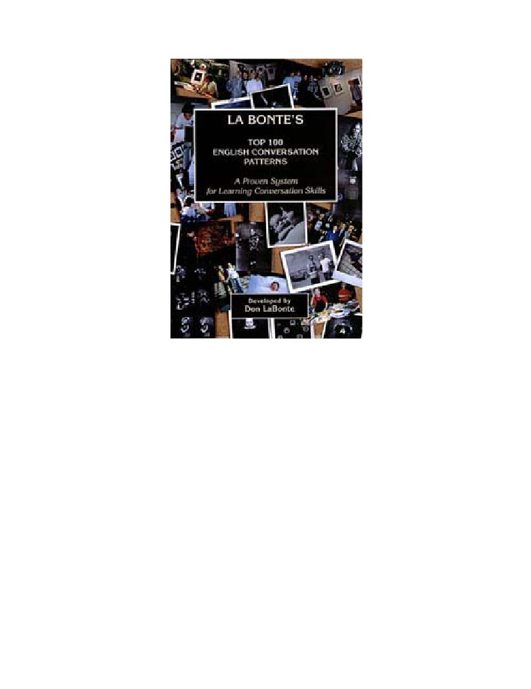
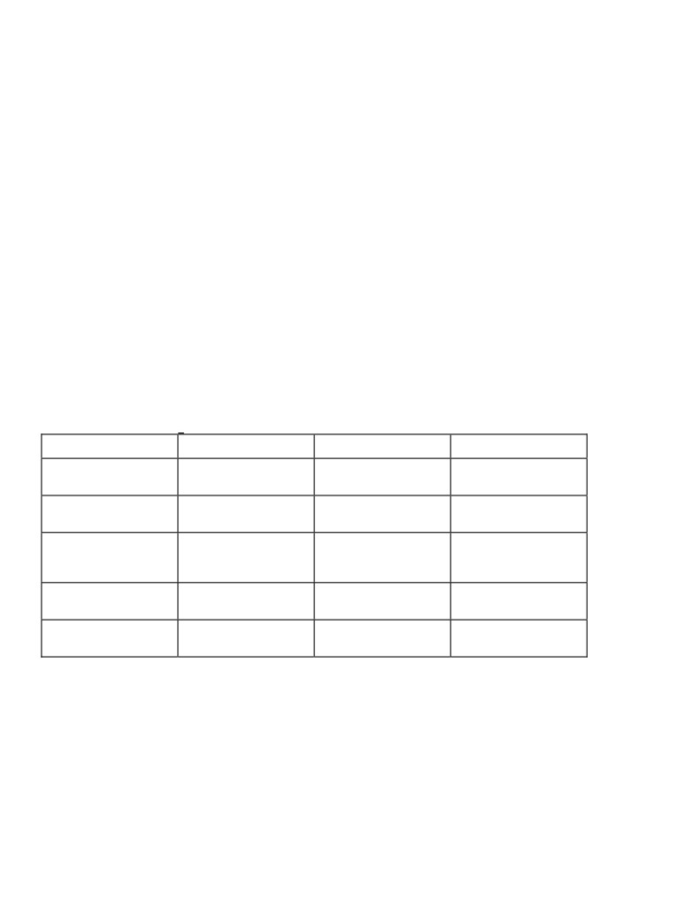
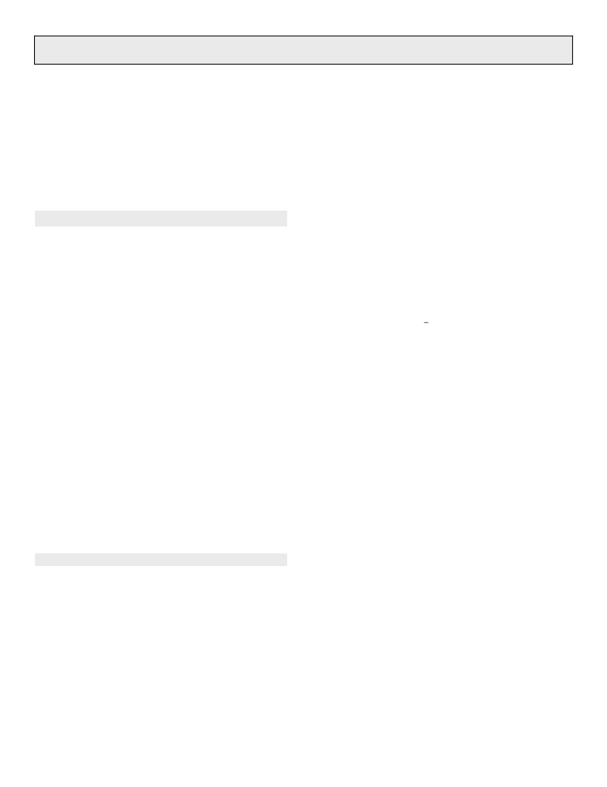
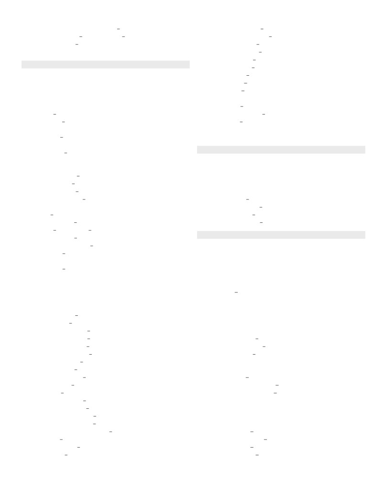
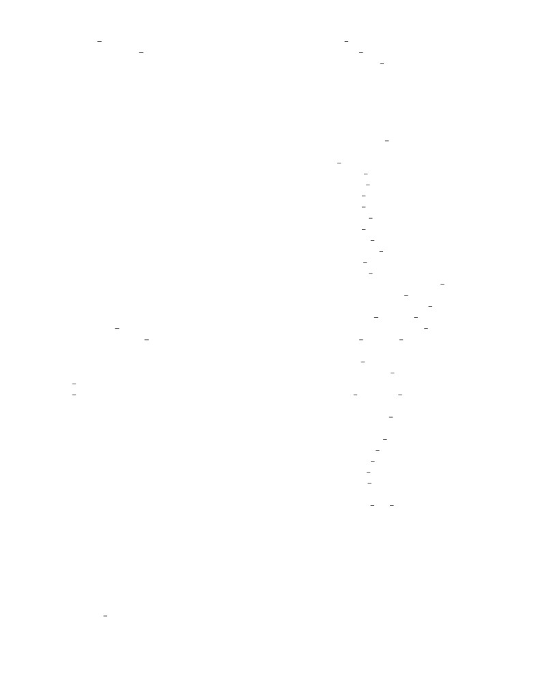

LA BONTE'S TOP 100
ENGLISH CONVERSATION PATTERNS
by
Don La Bonte
LA BONTE’S TOP 100 ENGLISH CONVERSATION PATTERNS
I may be able to speak the languages of men and even of
angels, but if I have no love, my speech is no more
than a noisy gong or a clanging bell.
(1 Corinthians 13:1)
Other books by Don La Bonte:
La Bonte's English Conversation Topics
LaBonte’s Conversation Patterns- Teachers Manual
COPYRIGHT
1998
by Don La Bonte
All rights reserved. No part of this book covered by the copyrights here on may be produced in any form
or means - graphic, electronic, or mechanical, including photocopying, recording, taping or information
storage retrieval systems - without written permission of the author.
LA BONTE’S TOP 100 ENGLISH CONVERSATION PATTERNS
INTRODUCTION
When you learn a language, there are three basic skills which have to be learned: conversation, reading and writing. Just
because you know how to speak English, doesn't necessarily mean that one knows how to read. There are many Americans who can
speak well, but do not know how to read. Even if you can speak and read English, it is difficult for some to write in English. Can you
write well enough to write a book or write an article for a newspaper? Writing well is perhaps the most difficult skill to master. You
will often hear complaints in companies that they have college graduates that can't compose a simple letter well.
The teacher can unwittingly confuse students by teaching them reading and writing skills rather than teaching them
conversation skills first. Children naturally learn conversation skills as a child, go to school and begin to learn how to read and finally
begin to learn how to write compositions in grammar school. Rarely is that learning order reversed.
For the beginning student who wishes to learn English conversation, it is hard to distinguish patterns which are commonly
found in conversation as opposed to reading and writing. Many begin to believe that their lack of conversation skills stem from their
lack of vocabulary skills. I knew many students who studied English for years, but continued to be frustrated by their utter inability
to converse or even hold the simplest of conversations.
In this book, I attempt to highlight for the students the most common CONVERSATION PATTERNS that they will
constantly hear with great frequency from a native speaker. All vocabulary revolves around these basic patterns. Not only does
vocabulary revolve around these patterns, but more importantly most feelings conveyed in conversation are communicated through
these patterns.
My basic premise is that there are commonly about 150 conversation patterns around which all vocabulary is connected to.
In one hour, a native speaker will use at least 90 of these individual patterns, and some of those individual patterns may be used
multiple times. Obviously, if the student learns to recognize and utilize these patterns while talking, they will greatly accelerate the
development of their conversation skills.
How do I know that at least 90 of the 150 or so patterns are used within an hour? Well, I can listen to a conversation and
during the hour period I can write down every time a pattern is used. Every time the same pattern is used, I make a mark next to it
indicating that it was used more than once. It is not uncommon for some of the same patterns to be used 10 times or more per
hour.The beginning student, on the other hand, utilizes only about 5 to 10 of these total 150 patterns within an hour which severely
handicaps their ability to convey feelings in conversation.
When I teach this system I do NOT concentrate on any new vocabulary learning. Vocabulary can be learned with a good
dictionary at the student’s leisure. What the student needs help with is identifying these commonly used conversation patterns and
helping them to utilize these basic patterns when they hold a conversation.
As unbelievable as it may seem, I usually take between 20 and 25 hours to review these 150 patterns with the student. After
that time, most students can "hear" the pattern when used in conversation, plus more importantly give me a reply using the same
pattern. If the student can reply to a question using the same pattern I used in the question, I know that they have been able to "hear"
the pattern and respond with the same pattern conveying the appropriate feeling.
I do not read the book with the student. We take one pattern at a time, ask a number of questions with that pattern in the past,
present and future tense and then go on to the next pattern. I will make a sentence with the pattern and ask the student to make it into a
question. I constantly backtrack reviewing the patterns that we have already learned. I keep vocabulary very, very simple.At all
times I know what the student should know since we are constantly reviewing throughout the first 20 hours the patterns that we have
previously learned together.
Below you will find some samples of what I mean.
Teacher question
Student response
Do you want to study?
Yes, I want to study.
Do you feel like meeting her?
No, I don't feel like meeting her.
Is it alright to go?
Yes, it is alright to go.
What does it look like?
It looks like a house.
When you study, do you like to drink Coke?
Yes, when I study, I like to drink Coke.
Did he plan to go?
*I don't know if he planned to go.
What did he tell you to do?
He told me to come back later.
The student must answer using the same pattern I used when asking the question. *If they don't know the answer, they have
to answer I DON'T KNOW IF sentence. They just can't answer I DON'T KNOW.

LA BONTE’S TOP 100 ENGLISH CONVERSATION PATTERNS
This method of teaching is very progressive beginning with the simplest of patterns.
PATTERNS
--
I study.
21
I want to study.
21,68
I want to study with him.
21,68,80
I want to study with him for 1 hour.
21,68,80,95
I want to study with him for 1 hour before mom comes home.
21,68,80,95,106,109
I said I want to study with him for 1 hour before mom comes home.
When reviewing the patterns I keep in mind that there are a few basic skills that everyone must master:
1.
How to make a positive sentence
I go.
2.
How to make a positive question
Do you go?
3.
How to make a negative sentence
I don't go.
4.
How to make a negative question
Don't you go?
5.
Present tense
positive sentence/negative sentence
I go.
I don't go.
positive question/negative question
Do you go?
Don't you go?
Past tense
positive sentence/negative sentence
I went.
I didn't go.
positive question/negative question
Did you go?
Didn't you go?
Future tense
positive sentence/negative sentence
I will go.
I won't go.
positive question/negative question
Will you go?
Won't you go?
6. I give the student a sentence and they have
to turn it into question.
I went.
Did you go?
The student can practice by themselves using this simple table of exercises with each pattern.
PATTERN: I HAVE TO v.
PAST
PRESENT
FUTURE
+ Q
Did you have to go?
Does he have to go?
Will you have to go?
positive question
- Q
Didn't he have to play?
Don't they have to play?
Won't they have to play?
negative question
WWWWWH Q
What did you have to do?
What do you have to do?
What will we have to do?
What, where, why, when,
who, how question
+ S
I had to study.
She has to study.
They'll have to study.
positive sentence
- S
She didn't have to leave.
You don't have to leave.
He won't have to leave.
negative sentence
So, when reviewing each of the patterns, I mix it up by sometimes asking negative questions in the past tense, positive questions in
the future tense, etc. The student must respond with the same tense in either the positive or negative. Nothing else is acceptable.
I have found that this system of learning greatly accelerates a student's ability to develop conversation skills. By helping to identify
what the beginning students will most often hear from native speakers will help them to quickly develop their conversation skills.
Rather than emphasizing vocabulary, eccentric grammar rules or difficult to remember grammar jargon, I instead focus on
CONVERSATION PATTERNS through which most feelings are unconsciously conveyed.
Special thanks goes to my wonderful wife, Serena, and my children Tina, Donny and Jimmy.
Don La Bonte
September. 1998

LA BONTE’S TOP 100 ENGLISH CONVERSATION PATTERNS
TABLE OF CONTENTS
ABBREVIATIONS:
v...
verb
s...
sentence
n...
noun
adv...
adverb
v PP... past participle
p...
pronoun
+s..
positive sentence
sp...
subject pronoun
-s...
negative sentence
op...
object pronoun
+q...
positive question
q...
question
-q...
negative question
a...
adjective
I happen to v.
INTRODUCTION
27.
I need to v.
1.
Verb: How to make a sentence
- It is necessary to v.
2.
Verb: How to make a question
- There is no need to v.
4.
Adjective: How to make a sentence
28.
I come to v.
5.
Adjective: How to make a question
I go to v.
6.
Tag questions
29.
I like to v.
7.
Questions that aren't questions
- I enjoy ving.
Short answers to questions
- I like it when s.
8.
I am / I was / I'll be
30.
It is worth ving.
- I see him ving.
- It is worth it to v.
- I hear him ving.
- It is worthwhile ving.
9.
Past tense
- It is worthwhile to v.
11.
Irregular verbs
- It pays to v.
12.
How to say hello/goodbye
31.
I plan to v.
13.
How to say thank you
- I intend to v.
14.
How to ask a favor
- I intend on ving.
15.
How to give/ask permission
32.
I am supposed to v.
16
How to make a suggestion
- I am supposed to be ving.
Why don't I v.
- I am to v.
Why don't you v.
- I am due to v.
Why don't we v.
33.
I try to v.
17.
How to ask for advice/opinion
- I attempt to v.
How to apologize
- I attempt ving.
18.
How to say no
- I make an attempt to v.
How to ask directions
- I make an effort to v.
19.
How to ask for help
34.
I'm thinking of ving.
- I'm thinking about ving.
VERBS
- I am considering ving.
20.
I am ving.
- I thought I'd v.
21.
I want to v.
35.
I feel like ving.
- I meant to v.
- I have an urge to v.
22.
I can v.
- I feel the need to v.
- There is no way to v.
- I am up to ving.
- There is no way of ving.
- I feel compelled to v.
23.
I'm going to v.
- I feel I have to v.
24.
I would like to v.
36.
I should v.
- I am interested in ving.
I ought to v.
- I would be interested in ving.
I had better v.
25.
I have to v.
I better v.
I have got to v.
37.
I used to v.
I must v.
I'm used to ving.
26.
I will probably v.
- I get used to ving.
LA BONTE’S TOP 100 ENGLISH CONVERSATION PATTERNS
- I'm accustomed to ving.
- I keep her from ving.
- I get accustomed to ving.
- I stop her from ving.
38.
I'm ready to v.
- I prohibit him from ving
- I'm set to v.
45.
I am able to v.
- I'm prepared to v.
- I am unable to v.
I am about to v.
- I managed to v.
- I am on the verge of ving.
- I am capable of ving.
I begin to v.
- I have the ability to v.
- I start to v.
46.
I have the opportunity to v.
I'm in the middle of ving.
I have the chance to v.
- I'm in the midst of ving.
I get to v.
- I'm in the process of ving.
47.
I almost v (past).
I keep ving.
- I nearly v (past).
- I continue ving.
- I just about v (past).
-
I go on ving.
- I practically v (past).
I end up ving
- I came close to ving.
- I wind up ving.
I may v.
I quit ving.
- I might v.
- I stop ving.
I may as well v.
- I finish ving.
- I might as well v.
- I'm through ving.
48.
I tend to v.
- I'm done ving.
- I have the tendency to v.
39.
I know how to v.
- I am apt to v.
40.
It's alright to v.
- I am inclined to v.
- It's ok to v.
I pretend to v.
- You can v.
- I pretend like s.
- You may v.
49.
I can't help but v.
It's alright not to v.
- I can't help ving.
- It's ok not to v.
- There isn't anything I can do but v.
- You don't have to v.
I do v
I did v.
- You don't need to v.
50.
I would rather v.
- You haven't got to v.
I would prefer to v.
It's not alright to v.
I would prefer ving.
- It's not ok to v.
51.
I hope to v.
- You shouldn't v.
- I expect to v.
- You better not v.
- I look forward to ving.
- You had better not v.
I hope you v.
41.
I only v.
52.
I decide to v.
- I do nothing but v.
I make up my mind to v.
42.
I just v.
53.
There is no point in ving.
- I simply v.
There is no sense in ving.
43.
All I do is v.
There is no use in ving.
All I v is n/op.
54.
1 + 1
- The only thing I do is v.
Pattern + BE a
44.
I make him v.
- vING = noun
- I force him to v.
I let him v.
ADJECTIVES
- I allow him to v.
55.
I feel a.
- I permit him to v.
It looks a.
I have him v.
It sounds a.
- I get him to v.
It smells a.
- I ask him to v.
It tastes a.
I help him v.
It feels a.
- I help him to v.
56.
It is a to v.
- I help him with ving.
- It is a ving.
I prevent her from ving.
I am feeling to v.
LA BONTE’S TOP 100 ENGLISH CONVERSATION PATTERNS
I am feeling that s..
Another
57.
I get a.
- Any other
- I become a.
- Some other
I make him a.
71.
Including
- I get him a.
Through
58.
More
Much more
The most
Without
- As a as
Depending on/upon
- Less
Much less
The least
In addition to
61.
I am more a than op.
- As well as
I v more than op.
Despite
62.
I am as a as op.
- In spite of
I v as much as op.
72.
Among
NOUN / PRONOUN
All of
63.
Pronouns
Out of all
64.
All/All of
None of
65.
I have n.
73.
How much
66.
Some plural noun
How many
Any plural noun
74.
Which / what
67.
How is n?
Which kind of
What is n like?
- What sort of
- How do you like n?
- What type of
- How did it go?
TIME
68.
With
75.
What time is it?
- Together with
77.
How long ago q?
To
78.
After how long q?
From
In how long q?
About
79.
How long will it be before you v?
- Regarding
80.
How long q?
- In regard to
For how long q?
- Concerning
- How long q for?
For
81.
How long does it take to v?
- For the sake of
82.
How often q?
Like
- How many times a day q?
- As if
- How many days a week q?
- As though
83.
How long has it been since you v past?
The fact that
84.
When was the last time you v past?
70.
Instead of
When was the first time you v past?
- Rather than
WHY / BECAUSE
According to
85.
Why q?
- From what
How come s?
Because of
What q for?
- On account of
Why is it that s?
- Due to
86.
Because
- As a result of
Since
- Thanks to
s So s
Besides
87.
To v
- Except for
In order to v
- Except
- In an attempt to v
- Not counting
- In an effort to v.
- Excluding
88.
For ving
- Other than
For n/op to v
- Aside from
89.
So s
- But
So that s
Only
In order that s
- Just
90.
The reason s is s.
Nothing but
- The reason for ving is s.

LA BONTE’S TOP 100 ENGLISH CONVERSATION PATTERNS
- The purpose of ving is s.
- Until when s
91.
Just because s, doesn't mean s.
- Up until when s
That's why s.
- Till when s.
How q?
The next time s
- How do you go about ving?
By the time s
COMPLEX SENTENCES
At the time s
92.
And
Now that s
- Plus
103.
I am too a to v.
And then
I am so a that s.
Or
I v so much that s.
But
104.
In case s
- s though
- In the event s
93.
When s
Unless s
- When ving
105.
Just / Right
94.
After s
Even
- After ving
95.
Before s
INDIRECT DISCOURSE
- Before ving
106.
Indirect discourse
- Prior to ving
107.
I tell him to v.
96.
time before s
I tell him not to v.
time after s
108.
I tell him let's v.
97.
Every time s
I tell him let's not v.
- Whenever s
109.
I tell him s.
Besides ving
110.
I tell him why s.
98.
If s
111.
I ask him if s.
- Should s
112
I ask him why s.
- s. Otherwise s.
- Only if s
MISCELLANEOUS
- If and only if s
113.
What do you mean?
99.
While s
114.
Did you ever v?
- While ving
- Have you ever v PP?
- As s
Do you ever v?
- In the process of ving
115
Will you ever v?
- In the course of ving
- Would you ever v?
100.
Instead of ving
116.
How a is it?
- Rather than ving
How much do you v?
- Rather than v
117.
What do you think about n?
As soon as s
What do you think about ving?
- Once s
118.
How about n?
- The minute s
What about n?
- The second s
119.
It seems like s.
- The instant s
- It looks like s.
- The moment s
- It seems s.
101.
Even though s
I seem to v.
As long as s
- I appear to v.
- So long as s
He looks a.
Although s
- He appears to be a.
102.
Since s
- She seems to be a.
- Ever since s
120..
!!!EXCLAMATION!!!
- Since when s
Do I ever v!
- Since the time s
- I sure do v!
- From the time s
- I v so adv!
- From the time when s
Is she ever a!
Until s
- Isn't she just a!
- Up until s
- I am so a!
- Till s
- I sure am a!

LA BONTE’S TOP 100 ENGLISH CONVERSATION PATTERNS
- How a!
139.
It's like s.
Would that ever be a!
- It's as if s.
What a n it is!
- It's as though s.
- It is such a n!
- It's like ving.
122.
I know
- It's similar to ving.
- I'm sure
- It's the same as ving.
- I can tell
I am likely to v.
- I have no idea
- I'll likely v.
- I have no clue
- I'm liable to v.
- I'm positive / I'm certain
- It is likely that s.
124.
I think
140.
Passive verbs
to be v PP
I doubt
141.
What s is a/v/n
I bet
142.
That is what s.
- I guess
That is when s.
- I suppose
That is who s.
- I assume
That is how s.
- I have the feeling
That is where s.
I wonder
That is why s.
125.
I understand
143.
What is it that s
- I get
144.
What happens if s?
- I see
- What if s?
I figure out
- Suppose s?
I find out
It doesn't make any difference if s.
I find
- It doesn't matter if s.
126.
You must v.
- It makes no difference if s.
You must have v PP.
145.
No matter how a you are, s.
You must be a.
No matter how much you v, s.
You must have been a.
146.
It's not that s, but that s.
127.
I wish I could v.
Not only do I v, but I also v.
I wish I would v.
147.
Guess what s
I wish I v (past).
- You know what s
128.
If s, I would v.
Listen s/q.
If s, I could v.
148.
The more s, the more s.
129.
Had I v PP, I would have v PP.
149.
The person that v
Had I v PP, I could have v PP.
- The person that s
130.
How much does it cost to v?
The thing that v
How much is it to v?
- The thing that s
How much do you pay to v?
The reason that s
How much do you spend to v?
The place that s
- How much do you charge to v?
The way that s
132.
I have something to v.
The time that s
I haven't got anything to v.
152.
How to say the price
I have no one to v.
I'm afraid that s, so s.
I have a lot to v.
153.
Where is it
134.
Something/ Anything
135.
Something a/s
Something to v
Anything a/s
Anything to v
136.
What else
Something else
Anything else
137.
Wherever s
138
No one / Any one
No one v.
I don't v anything.